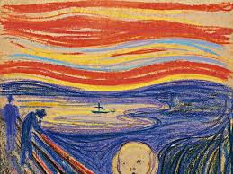
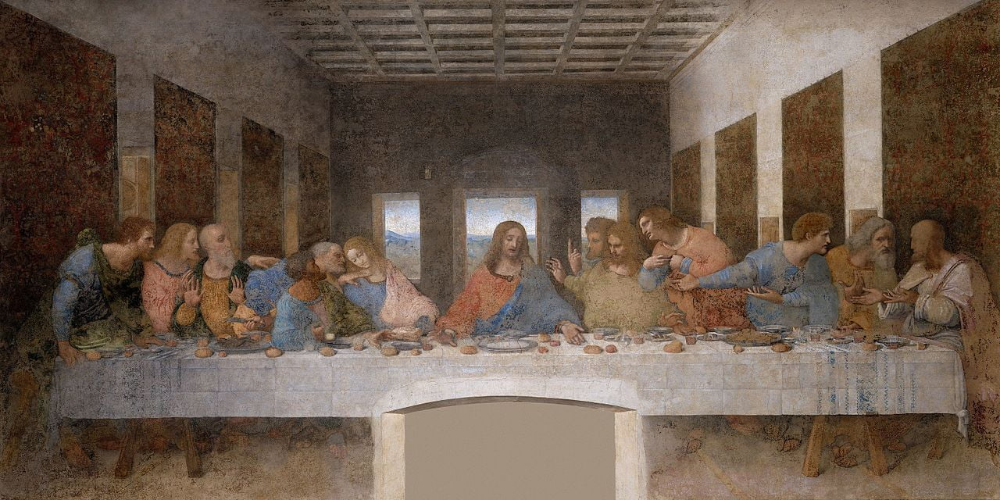

"EL ARTE ES MI SENTIMIENTO"
El arte es un mundo que pocos entienden, a veces la vida nos lleva al encuentro con alguna pintura, canción o una danza, que nos pone a pensar en su verdadero significado. De repente nos encontramos con sentimientos de empatía, comprensión e identificación; esto se debe a la teoría del arte como expresión, esta cobra vida hacia finales del siglo XIX., el arte se manifiesta en sentimientos y experiencias del autor, pero, ¿cómo público, espectador y amantes del arte lograremos entenderlo?
Es normal y entendible que tengamos sentimientos encontrados con el arte, los pequeños detalles, como las pinceladas, colores, trazos, formas, son las que nos hacen sentir esas emociones; ¿lograremos colocarnos en la posición del artista y verla de la misma forma que él? No, desde mi punto de vista no es posible, ya que somos personas con debilidades, puntos y opiniones críticas diferentes; si colocamos a cinco personas a ver una pintura, algunas de ellas probablemente podrán describir aquello que ven, y otras más analíticas dirán sentimientos, quizás unos más acertados a la perspectiva del artista, pero me cuesta creer que razonen y entiendan de la misma forma. El arte abstracto es un ejemplo, muchas veces solo se ven líneas, puntos y curvas, de diferentes colores, tamaños y grosores, todos únicos y diferentes, y ahí el ojo público, se coloca en un estado crítico tratando de buscarle una forma cotidiana y realista, cuando en ella puede expresarse sentimientos de rabia, ansiedad, emoción, euforia, y cualquier sentimiento que tu alma y mente te permita dar, y le puedes asignar el significado que tu corazón te dé y nadie te juzgara ya que si lo vez de esa forma es porque esa es tu verdad.
¿Los colores importan? Si y mucho, ya que las personas solemos decir que los colores cálidos (rojos, anaranjados, amarillos) se pueden clasificar como colores vitales, alegres y activos, los colores fríos (verdes, azules, violetas) nos producen una impresión de reposo, alejamiento y calma, y utilizados solos pueden darnos un efecto de poca intimidad y de tristeza y los colores neutros (blancos, grises, negros) nos pueden dan a entender pureza, elegancia, poder, soledad o vacío; si tenemos los colores en cuenta nos podemos dar una primera impresión y lo que puede expresar, ya que nuestro cerebro constantemente relaciona los colores con los estados de ánimos, pero no te dejes engañar detrás de un lindo tono de amarillo de cromo puede tener una historia muy diferente.
De acuerdo a lo anterior, daré dos ejemplos, para el primero usaremos nuestra imaginación, con el poder de tu mente te transportaras a un escenario que te traiga felicidad y alegría, pero colócale un filtro azul, deja de ser tan feliz ¿no? Cambia un poco la perspectiva, pero eso no quiere decir que deba ser triste. Y el segundo ejemplo consiste en una teoría de Vincent van Gogh y el amarillo, él es creador de “La noche estrellada”, “Los comedores de patatas”, entre muchas más, no entraremos en la biografía de él, pero podremos decir que su vida no fue muy feliz, como lo mencionamos anteriormente, el color amarillo es un color que asociamos con la alegría, a felicidad, con la juventud, creatividad y diversión, pero a su vez es un color contradictorio, ya que también es un color que representa peligro, toxicidad, dicen que simboliza la traición y el egoísmo; ¿que tiene que ver con Vincent? Bueno teniendo en cuenta que él tuvo una vida difícil y solitaria, se dice que lo que buscaba era ser feliz como el mismo color, y por esta razón lo usaba comúnmente en todo, tonos de piel, flores, objetos, campos, luces, la luna y las estrellas, ¿pero sus pinturas aun usando este color considera usted que son pinturas que nos expresan ese sentimiento de alegría y conformidad?
¿Y una canción puede expresar mi estado de ánimo? Si, todo depende de ti, muchas veces decimos “esta canción, no es solo una canción, es un sentimiento” quizás a la hora de interpretar una canción el trabajo no es tan tedioso, ya que la letra se explica sola, y por eso al momento de cantarla es normal que nos expresemos, gritemos o lloremos la letra de esta misma, ya que nos colocamos de manera instantánea en sintonía con la canción, momentos del pasado o presente se ven reflejados y esto hace que estemos plenamente metidos en la canción.
Como lo dije anteriormente. el color engaña, ¡no? Bueno, pues al oído le ocurre una situación similar, ya que solemos asociar las melodías enérgicas con una letra feliz y alejada de lo triste y melancólico, melodías lentas y calmadas con letras tristes, de rupturas, soledad o melodías empoderadas que las asociamos con temas de revolución, temas sociales, que algo llega a su fin o pensamos en himnos. Pero muchas veces nos ocurre que las melodías mienten, y una situación muy cotidiana que representa esto, es cuando escuchamos música con idiomas del extranjero, inglés, francés, coreano entre otros, ya que al no saber una lengua extranjera solo nos dejamos llevar por la melodía de la canción.
El arte es maravilloso y el artista desea que su obra sea admirada y sientas lo que el trata de trasmitir, el precio monetario es casi inexistente a comparación del tiempo dedicado a su contemplación, cada pequeño detalle quizás tenga un por qué y muchas veces lo que vemos y escuchamos no tienen significados literales, como espectadores podemos darnos cuenta de las teorías, historias, emociones, que con la vista que nuestro corazón y alma nos permite apreciar; el arte tiene muchas ramas y en todas de estas se deben disfrutar, sentirlas, que tu entendimiento e imaginación fluya como el viento tu eres el que tiene la última palabra y tú decides en que creer; si intentas hacer arte y no te logran entender no estás loco, quizás tu arte no es para esta generación.